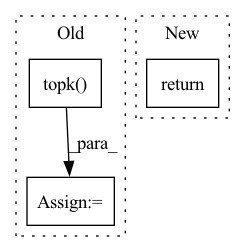

Pattern ID :38896

Before Change
bbox_targets=None,
bbox_weights=None,
reduce=False)["loss_cls"]
_, topk_loss_pos_inds = loss_pos.topk(num_expected)
return pos_inds[topk_loss_pos_inds]
def _sample_neg(self,
assign_result,
After Change
if pos_inds.numel() <= num_expected:
return pos_inds
else:
return self.hard_mining(pos_inds, assign_result, num_expected,
bboxes, feats)
def _sample_neg(self,
In pattern: SUPERPATTERN
Frequency: 5
Non-data size: 3
Instances
Fragment ID: 110962349
Project Name: wxinlong/solo
Commit Name: 6a363603cc5c004df4020ba643c471e03065b92e
Time: 2018-12-10
Author: yhcao6@gmail.com
File Name: mmdet/core/bbox/samplers/ohem_sampler.py
M Class Name: OHEMSampler
N Class Name: OHEMSampler
M Method Name: _sample_pos(5)
N Method Name: _sample_pos(5)
M Parent Class: BaseSampler
N Parent Class: BaseSampler
M File Name: mmdet/core/bbox/samplers/ohem_sampler.py
N File Name: mmdet/core/bbox/samplers/ohem_sampler.py
M Start Line: 31
M End Line: 51
N Start Line: 49
N End Line: 56
'>
Before Change
loss_hard = loss[loss > self.thresh]
if loss_hard.numel() < n_min:
loss_hard, _ = loss.topk(n_min)
return torch.mean(loss_hard)
After Change
def forward(self, preds, labels: Tensor) -> Tensor:
if isinstance(preds, list):
return sum([w * self._forward(pred, labels) for (pred, w) in zip(preds, self.aux_weights)])
return self._forward(preds, labels)
class Dice(nn.Module):
'>
Fragment ID: 110962361
Project Name: sithu31296/semantic-segmentation
Commit Name: b68900992fb24dd5166b2b34e3d35d19493d747d
Time: 2021-08-21
Author: sithu31296@gmail.com
File Name: utils/losses.py
M Class Name: OhemCrossEntropy
N Class Name: OhemCrossEntropy
M Method Name: forward(3)
N Method Name: forward(3)
M Parent Class: nn.Module
N Parent Class: nn.Module
M File Name: utils/losses.py
N File Name: utils/losses.py
M Start Line: 25
M End Line: 37
N Start Line: 46
N End Line: 49
'>
Before Change
bbox_targets=None,
bbox_weights=None,
reduce=False)["loss_cls"]
_, topk_loss_neg_inds = loss_neg.topk(num_expected)
return neg_inds[topk_loss_neg_inds]
After Change
if len(neg_inds) <= num_expected:
return neg_inds
else:
return self.hard_mining(neg_inds, assign_result, num_expected,
bboxes, feats)
'>
Fragment ID: 110962357
Project Name: wxinlong/solo
Commit Name: 6a363603cc5c004df4020ba643c471e03065b92e
Time: 2018-12-10
Author: yhcao6@gmail.com
File Name: mmdet/core/bbox/samplers/ohem_sampler.py
M Class Name: OHEMSampler
N Class Name: OHEMSampler
M Method Name: _sample_neg(5)
N Method Name: _sample_neg(5)
M Parent Class: BaseSampler
N Parent Class: BaseSampler
M File Name: mmdet/core/bbox/samplers/ohem_sampler.py
N File Name: mmdet/core/bbox/samplers/ohem_sampler.py
M Start Line: 60
M End Line: 80
N Start Line: 65
N End Line: 72
'>
Before Change
R = torch.einsum("bie,bje->bij", sq, sk).to(q) * (dim ** -0.5)
if self.n_sortcut > 0:
values, indices = torch.topk(R, self.n_sortcut)
values = values.reshape(bh, self.n_sortcut, -1)
indices = indices.reshape(bh, self.n_sortcut, -1)
R = torch.zeros(bh, self.n_sortcut, buckets, device=device, dtype=dtype).scatter(2, indices, values)
After Change
if self.non_permutative:
k = topk if self.n_sortcut == 0 else self.n_sortcut
return differentiable_topk(R, k=k)
return gumbel_sinkhorn(F.relu(R), self.sinkhorn_iter, self.temperature)
'>
Fragment ID: 110962342
Project Name: lucidrains/sinkhorn-transformer
Commit Name: 661c2edf85ed877510c714a024b5332299a4ee00
Time: 2020-05-14
Author: lucidrains@gmail.com
File Name: sinkhorn_transformer/sinkhorn_transformer.py
M Class Name: AttentionSortNet
N Class Name: AttentionSortNet
M Method Name: forward(4)
N Method Name: forward(3)
M Parent Class: nn.Module
N Parent Class: nn.Module
M File Name: sinkhorn_transformer/sinkhorn_transformer.py
N File Name: sinkhorn_transformer/sinkhorn_transformer.py
M Start Line: 370
M End Line: 386
N Start Line: 383
N End Line: 402
'>
Before Change
scores_matrix = pad_sequence(scores_list, batch_first=True, padding_value=-np.inf) // nusers x items
// get topk
_, topk_index = torch.topk(scores_matrix, max(self.topk), dim=-1) // nusers x k
return topk_index
After Change
for k in self.topk:
key = "{}@{}".format(metric, k)
metric_dict[key] = round(value[k - 1], 4)
return metric_dict
def _check_args(self):
'>
Fragment ID: 110962355
Project Name: rucaibox/recbole
Commit Name: df66b6285fec567d1f3ca0d6ee9d9ceb71f792b6
Time: 2020-10-20
Author: 1337990880@qq.com
File Name: recbole/evaluator/topk_evaluator.py
M Class Name: TopKEvaluator
N Class Name: TopKEvaluator
M Method Name: evaluate(3)
N Method Name: evaluate(4)
M Parent Class: AbstractEvaluator
N Parent Class: AbstractEvaluator
M File Name: recbole/evaluator/topk_evaluator.py
N File Name: recbole/evaluator/topk_evaluator.py
M Start Line: 38
M End Line: 57
N Start Line: 69
N End Line: 80